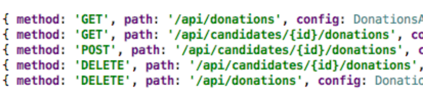
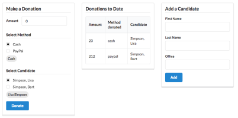

Building Modern Web Applications & Services
All labs's in Module
Lab-1.1 Case Study
Lab-1.2 Harp & Surge
Lab-1.3 Templating
Lab-1.4 Semantic UI
Lab-1.5 Semantic UI
Lab-2.1 JS Intro
Lab-2.2 JS Basics
Lab-3 JQuery
Lab-4.1 Github API
Lab-4.2-FoureSquare API
Lab-5 Applications
Lab-6 Views
Lab-7 Sessions
Lab-8 Models
Lab-9 Validation
Lab-10 Deployment
Lab-11 Seeding
Lab-12 Apis
Lab-13 Tdd
Lab-14 Rest

Lab-Aurelia 1
Lab-Aurelia 2

Lab-Aurelia 3
Aurelia Lab 3 TS
Lab-Aurelia 4
Lab-Aurelia 4 TS
Lab-Hapi-JWT
Lab-Aurelia 5
Lab-Aurelia 5 TS